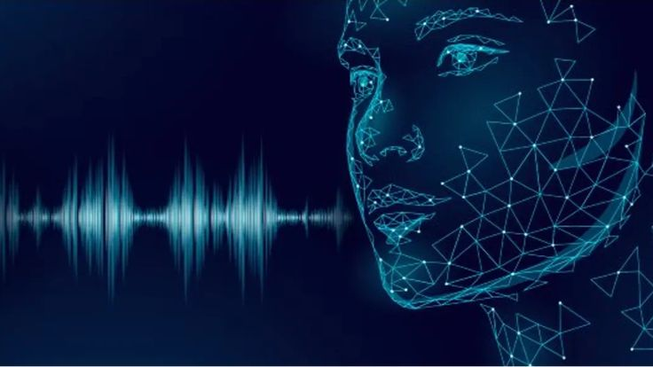

GENERACIÓN DE VOZ CON IA
Apropiación de la voz e identidad en estafas virtuales con IA
La voz humana es una de nuestras señas de identidad más íntimas: define quiénes somos, transmite emociones y genera confianza inmediata. Sin embargo, los avances en inteligencia artificial generativa han transformado el sonido de nuestra voz en un dato biométrico reproducible a partir de fragmentos de pocos segundos. Esta facilidad técnica abre una encrucijada crítica entre el derecho inalienable a la propia voz y su apropiación ilegítima para manipular la verdad y cometer fraudes digitales.

Seleccioná un Núcleo para Explorar
Hacé clic en cualquiera de los núcleos para abrir su apartado especial e interactuar con los experimentos de clonación y análisis de estafas.
Derecho sobre tu voz: ¿Tu voz o mi voz?
Identidad, consentimiento bioético, uso no autorizado de material sonoro y el test interactivo de reconocimiento de voz de IA.
Manipulación y Suplantación de Alta Fidelidad
Experimentá con una muestra de audio clonado extraído de notas de voz públicas
y descubrí la velocidad de copia acústica.
Se necesitan solo 3 a 5 segundos de audio limpio para clonar un timbre vocal con modelos de última generación.
Utilización de audio sintético para ejecutar llamadas extorsivas que anulan la capacidad de respuesta racional.
La grabación de voz deja de constituir una prueba fehaciente de la presencia o veracidad de una persona.
Estafas de voz con IA: ¿A quién le creemos?
Simulador interactivo "Armá tu propia estafa", filtros de voz en tiempo real y gráfico de torta con estadísticas de impacto.